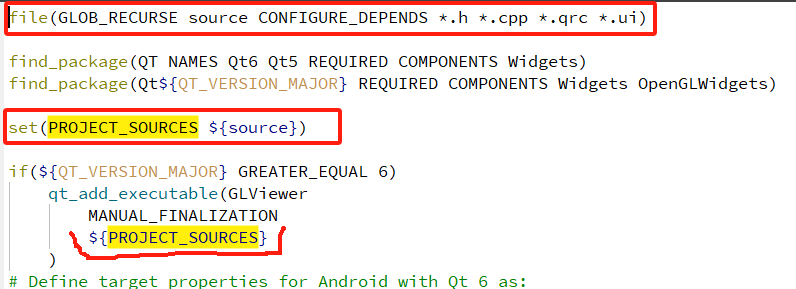
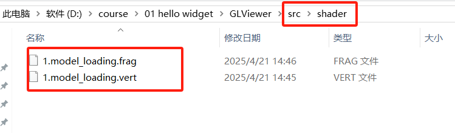
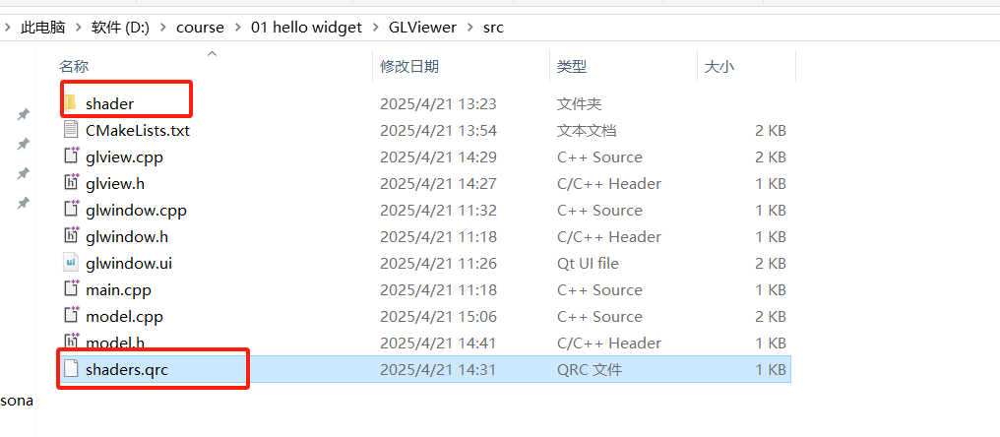
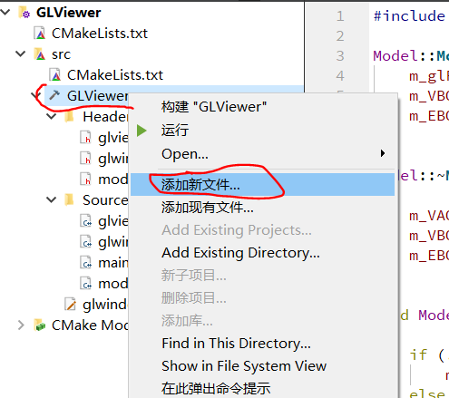
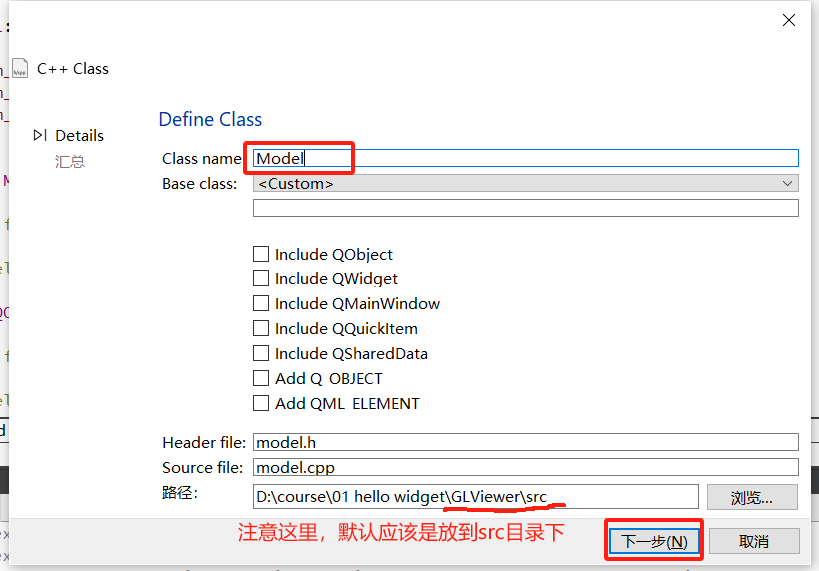
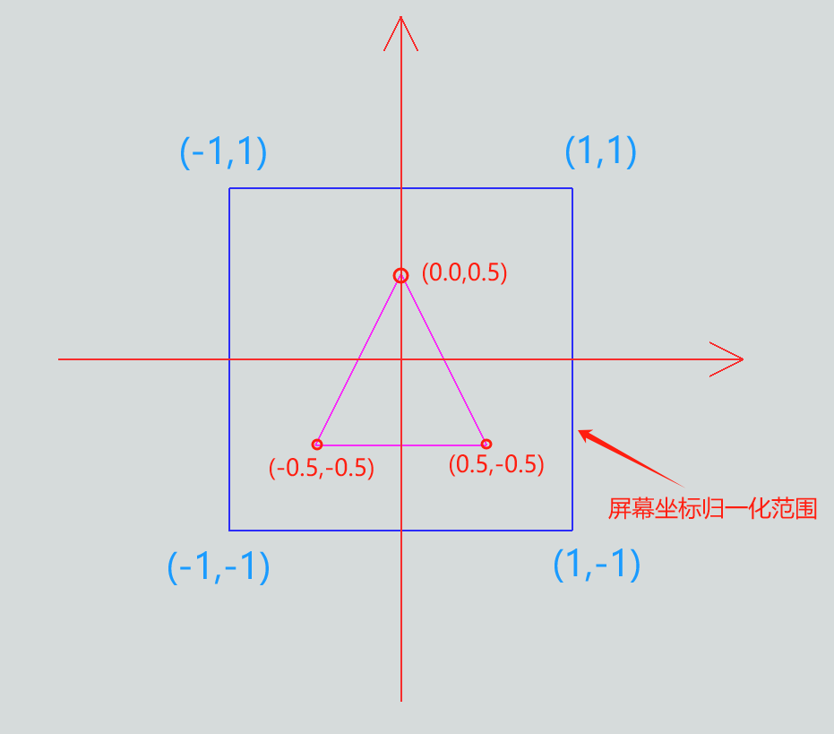
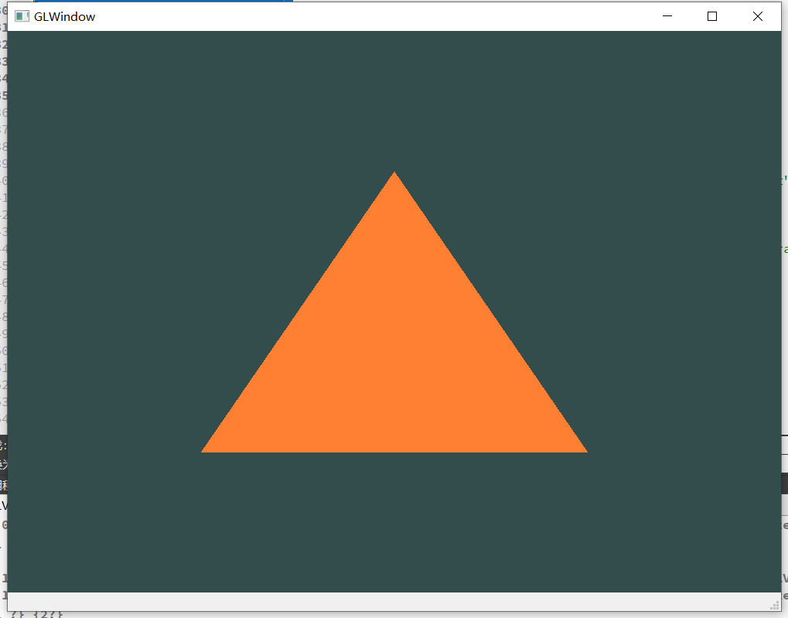
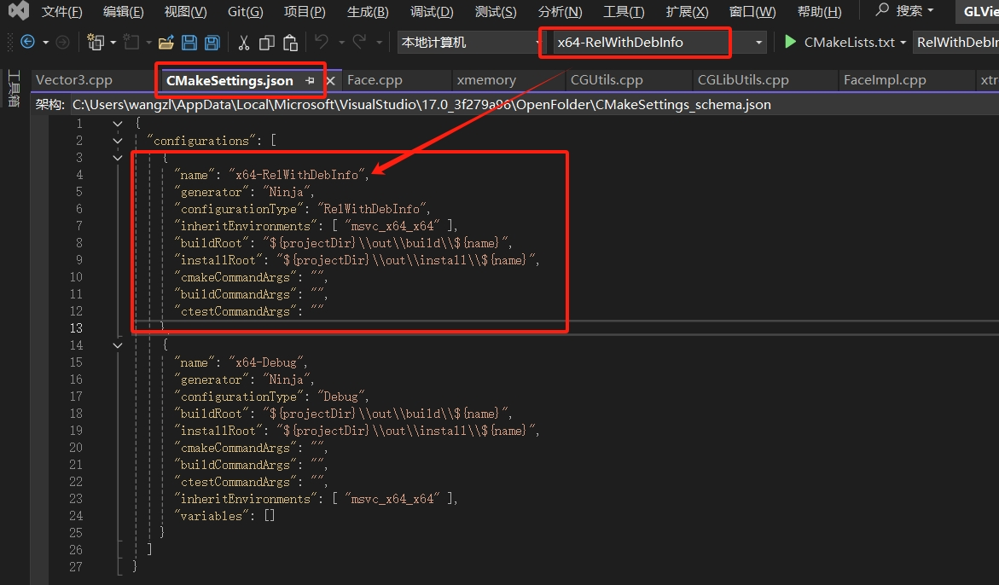

4.Hello Triangle
4.1.优化cmakelists文件
- 优化源代码、资源文件变量，后续新增代码文件时不再更改cmakelists文件，且可识别包含.qrc等着色器、图片资源；

- 新建”src”目录管理代码和资源文件

- 拆分cmakelists文件，根目录一个，src目录一个
原始cmakelists：
cmake_minimum_required(VERSION 3.16)
project(GLViewer VERSION 0.1 LANGUAGES CXX)
set(CMAKE_AUTOUIC ON)
set(CMAKE_AUTOMOC ON)
set(CMAKE_AUTORCC ON)
set(CMAKE_CXX_STANDARD 17)
set(CMAKE_CXX_STANDARD_REQUIRED ON)
file(GLOB_RECURSE source CONFIGURE_DEPENDS *.h *.cpp *.qrc *.ui)
find_package(QT NAMES Qt6 Qt5 REQUIRED COMPONENTS Widgets)
find_package(Qt${QT_VERSION_MAJOR} REQUIRED COMPONENTS Widgets OpenGLWidgets)
set(PROJECT_SOURCES ${source})
if(${QT_VERSION_MAJOR} GREATER_EQUAL 6)
qt_add_executable(GLViewer
MANUAL_FINALIZATION
${PROJECT_SOURCES}
)
# Define target properties for Android with Qt 6 as:
# set_property(TARGET GLViewer APPEND PROPERTY QT_ANDROID_PACKAGE_SOURCE_DIR
# ${CMAKE_CURRENT_SOURCE_DIR}/android)
# For more information, see https://doc.qt.io/qt-6/qt-add-executable.html#target-creation
else()
if(ANDROID)
add_library(GLViewer SHARED
${PROJECT_SOURCES}
)
# Define properties for Android with Qt 5 after find_package() calls as:
# set(ANDROID_PACKAGE_SOURCE_DIR "${CMAKE_CURRENT_SOURCE_DIR}/android")
else()
add_executable(GLViewer
${PROJECT_SOURCES}
)
endif()
endif()
target_link_libraries(GLViewer PRIVATE Qt${QT_VERSION_MAJOR}::Widgets Qt6::OpenGLWidgets)
# Qt for iOS sets MACOSX_BUNDLE_GUI_IDENTIFIER automatically since Qt 6.1.
# If you are developing for iOS or macOS you should consider setting an
# explicit, fixed bundle identifier manually though.
if(${QT_VERSION} VERSION_LESS 6.1.0)
set(BUNDLE_ID_OPTION MACOSX_BUNDLE_GUI_IDENTIFIER com.example.GLViewer)
endif()
set_target_properties(GLViewer PROPERTIES
${BUNDLE_ID_OPTION}
MACOSX_BUNDLE_BUNDLE_VERSION ${PROJECT_VERSION}
MACOSX_BUNDLE_SHORT_VERSION_STRING ${PROJECT_VERSION_MAJOR}.${PROJECT_VERSION_MINOR}
MACOSX_BUNDLE TRUE
WIN32_EXECUTABLE TRUE
)
include(GNUInstallDirs)
install(TARGETS GLViewer
BUNDLE DESTINATION .
LIBRARY DESTINATION ${CMAKE_INSTALL_LIBDIR}
RUNTIME DESTINATION ${CMAKE_INSTALL_BINDIR}
)
if(QT_VERSION_MAJOR EQUAL 6)
qt_finalize_executable(GLViewer)
endif()
拆分后， （1）根目录cmakelist
cmake_minimum_required(VERSION 3.16)
project(GLViewer VERSION 0.1 LANGUAGES CXX)
set(CMAKE_AUTOUIC ON)
set(CMAKE_AUTOMOC ON)
set(CMAKE_AUTORCC ON)
set(CMAKE_CXX_STANDARD 17)
set(CMAKE_CXX_STANDARD_REQUIRED ON)
add_subdirectory(src)
（2）”src”目录cmakelists文件
file(GLOB_RECURSE source CONFIGURE_DEPENDS *.h *.cpp *.qrc *.ui)
find_package(QT NAMES Qt6 Qt5 REQUIRED COMPONENTS Widgets)
find_package(Qt${QT_VERSION_MAJOR} REQUIRED COMPONENTS Widgets OpenGLWidgets)
set(PROJECT_SOURCES ${source})
if(${QT_VERSION_MAJOR} GREATER_EQUAL 6)
qt_add_executable(GLViewer
MANUAL_FINALIZATION
${PROJECT_SOURCES}
)
# Define target properties for Android with Qt 6 as:
# set_property(TARGET GLViewer APPEND PROPERTY QT_ANDROID_PACKAGE_SOURCE_DIR
# ${CMAKE_CURRENT_SOURCE_DIR}/android)
# For more information, see https://doc.qt.io/qt-6/qt-add-executable.html#target-creation
else()
if(ANDROID)
add_library(GLViewer SHARED
${PROJECT_SOURCES}
)
# Define properties for Android with Qt 5 after find_package() calls as:
# set(ANDROID_PACKAGE_SOURCE_DIR "${CMAKE_CURRENT_SOURCE_DIR}/android")
else()
add_executable(GLViewer
${PROJECT_SOURCES}
)
endif()
endif()
target_link_libraries(GLViewer PRIVATE Qt${QT_VERSION_MAJOR}::Widgets Qt6::OpenGLWidgets)
# Qt for iOS sets MACOSX_BUNDLE_GUI_IDENTIFIER automatically since Qt 6.1.
# If you are developing for iOS or macOS you should consider setting an
# explicit, fixed bundle identifier manually though.
if(${QT_VERSION} VERSION_LESS 6.1.0)
set(BUNDLE_ID_OPTION MACOSX_BUNDLE_GUI_IDENTIFIER com.example.GLViewer)
endif()
set_target_properties(GLViewer PROPERTIES
${BUNDLE_ID_OPTION}
MACOSX_BUNDLE_BUNDLE_VERSION ${PROJECT_VERSION}
MACOSX_BUNDLE_SHORT_VERSION_STRING ${PROJECT_VERSION_MAJOR}.${PROJECT_VERSION_MINOR}
MACOSX_BUNDLE TRUE
WIN32_EXECUTABLE TRUE
)
include(GNUInstallDirs)
install(TARGETS GLViewer
BUNDLE DESTINATION .
LIBRARY DESTINATION ${CMAKE_INSTALL_LIBDIR}
RUNTIME DESTINATION ${CMAKE_INSTALL_BINDIR}
)
if(QT_VERSION_MAJOR EQUAL 6)
qt_finalize_executable(GLViewer)
endif()
- 更改后记得编译运行哦，检查是否有错误；
4.2.添加shader文件


<RCC>
<qresource prefix="/">
<file>shader/1.model_loading.frag</file>
<file>shader/1.model_loading.vert</file>
</qresource>
</RCC>
- 顶点着色器
#version 450 core
layout (location = 0) in vec3 aPos;
layout (location = 1) in vec3 aNormal;
void main()
{
gl_Position = vec4(aPos, 1.0);
}
- 片段着色器
#version 450 core
out vec4 FragColor;
void main()
{
FragColor = vec4(1.0f, 0.5f, 0.2f, 1.0f);
}
4.3.添加model类


Attention
添加Model类后，会弹窗是否修改cmakelists文件，我们取消勾选，然后点击应用即可。因为上述cmakelists优化后对于新添加代码文件无须更改cmakelists文件。
我们的Model.h头文件看起来像这样，
#ifndef MODEL_H
#define MODEL_H
#include <QOpenGLShaderProgram>
#include <QOpenGLBuffer>
#include <QOpenGLVertexArrayObject>
#include <QOpenGLFunctions_4_5_Core>
class Model
{
public:
Model(QOpenGLFunctions_4_5_Core* glFunc);
~Model();
void Draw(QOpenGLShaderProgram& shader);
private:
// 顶点的数据
float vertices[18] = {
// 所有的值是在[-1, 1]之间的
-0.5f, -0.5f, 0.0f, 0.f, 0.f, 1.f,
0.5f, -0.5f, 0.0f, 0.f, 0.f, 1.f,
0.0f, 0.5f, 0.0f, 0.f, 0.f, 1.f
};
unsigned int indices[3]{ 0, 1, 2 };
QOpenGLFunctions_4_5_Core* m_glFunc;
QOpenGLVertexArrayObject m_VAO;
QOpenGLBuffer m_VBO, m_EBO;
};
#endif // MODEL_H
它的成员数据包含我们熟悉的QOpenGLFunctions_4_5_Core(包含OpenGL API)、VA0、VBO、EBO，还有如下图所示的3组顶点坐标，每组顶点包含一个由3个float表示XYZ坐标的点和一个由3个float表示的法向数据。

Model.cpp文件看起来是这样，实现了相关数据的初始化，释放，以及在OpenGL状态机中进行资源的绑定和绘制。
#include "model.h"
Model::Model(QOpenGLFunctions_4_5_Core* glFunc):
m_glFunc(glFunc),
m_VBO(QOpenGLBuffer::VertexBuffer),
m_EBO(QOpenGLBuffer::IndexBuffer)
{}
Model::~Model()
{
m_VAO.destroy();
m_VBO.destroy();
m_EBO.destroy();
}
void Model::Draw(QOpenGLShaderProgram &shader)
{
if (!m_VAO.isCreated())
m_VAO.create();
else
m_VAO.release();
QOpenGLVertexArrayObject::Binder vaoBinder(&m_VAO);
if (!m_VBO.isCreated())
m_VBO.create();
else
m_VBO.release();
if (!m_EBO.isCreated())
m_EBO.create();
else
m_EBO.release();
m_VBO.bind();
m_VBO.allocate(vertices, sizeof(vertices));
m_EBO.bind();
m_EBO.allocate(indices, sizeof(indices));
// set the vertex attribute pointers
// vertex Positions
m_glFunc->glEnableVertexAttribArray(0);
m_glFunc->glVertexAttribPointer(0, 3, GL_FLOAT, GL_FALSE, 6 * sizeof(float), (void*)0);
// vertex normals
m_glFunc->glEnableVertexAttribArray(1);
m_glFunc->glVertexAttribPointer(1, 3, GL_FLOAT, GL_FALSE, 6 * sizeof(float), (void*)(3 * sizeof(float)));
shader.setUniformValue("objectColor", 1.f, 0.2f, 0.2f, 1.f);
QOpenGLVertexArrayObject::Binder bind(&m_VAO);
m_glFunc->glDrawElements(GL_TRIANGLES, sizeof(indices), GL_UNSIGNED_INT, 0);
}
4.4.在GLView中调用绘制
在GLView中进行Model类成员字段m_model的初始化，释放，以及绘制调用；Shader的初始化，绑定和释放。
void GLView::initializeGL()
{
initializeOpenGLFunctions();
initShader(m_lightShader);
m_model = new Model(this);
}
void GLView::paintGL()
{
glClearColor(0.2f, 0.3f, 0.3f, 1.0f);
glClear(GL_COLOR_BUFFER_BIT);
m_lightShader.bind();
m_model->Draw(m_lightShader);
m_lightShader.release();
}
如果没有差错，或者差错被排查解决，那么将出现如下效果，恭喜你~ 
4.5.使用VS2022注意事项
如果使用VS2022进行开发和调试，需要先进行如下CMake设置。

